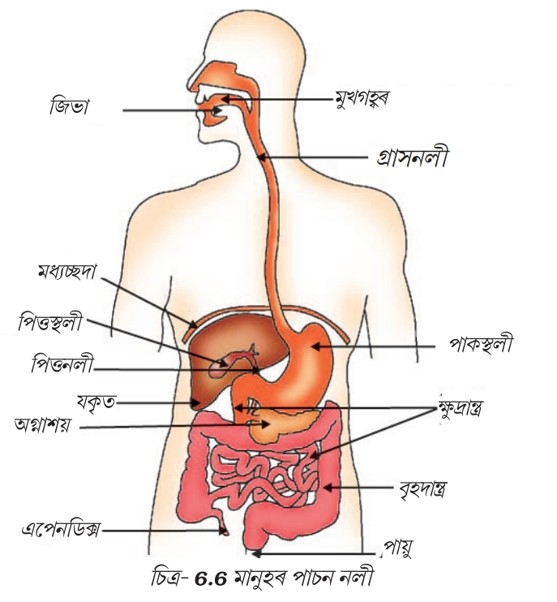
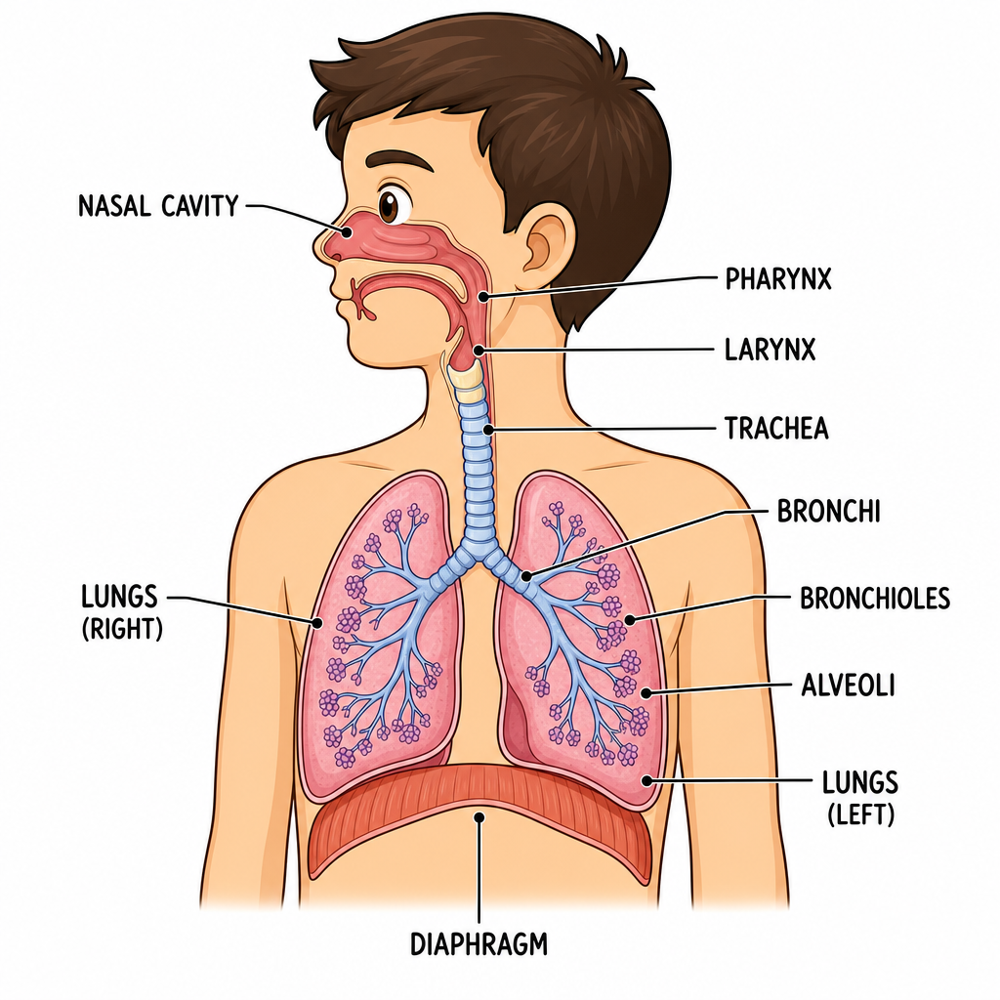

অধ্যায় : জীৱন প্ৰক্ৰিয়া
১. পুষ্টি (Nutrition)
সংজ্ঞা
পুষ্টি হৈছে সেই প্ৰক্ৰিয়া যাৰ দ্বাৰা জীৱই খাদ্য গ্ৰহণ কৰি তাৰ পৰা শক্তি আহৰণ কৰে আৰু বৃদ্ধি, বিকাশ, দেহৰ মেৰামতি তথা জীৱনধাৰণৰ বাবে ব্যৱহাৰ কৰে।
পুষ্টিৰ প্ৰকাৰসমূহ
-
১. স্বপোষী পুষ্টি (Autotrophic Nutrition)
যি পদ্ধতিত জীৱই নিজৰ খাদ্য নিজে প্ৰস্তুত কৰিব পাৰে,তাকে স্বপোষী পুষ্টি বোলে আৰু তেনেকুৱা জীৱক স্বপোষী জীৱ বোলা হয়।
সেউজীয়া উদ্ভিদে সূৰ্যৰ পোহৰ, কাৰ্বন ডাই-অক্সাইড আৰু পানী ব্যৱহাৰ কৰি খাদ্য প্ৰস্তুত কৰে।
এই প্ৰক্ৰিয়াক সালোকসংশ্লেষণ বোলা হয়。
উদাহৰণ :
- সেউজীয়া উদ্ভিদ
- নীল সেউজ শেলাই
- চায়ানোবেক্টেৰিয়া
-
২. পৰপোষী পুষ্টি (Heterotrophic Nutrition)
যি পদ্ধতিত জীৱই নিজৰ খাদ্য নিজে প্ৰস্তুত কৰিব নোৱাৰে আৰু আন জীৱৰ ওপৰত নিৰ্ভৰ কৰে,তাকে পৰপোষী পুষ্টি বোলে আৰু তেনেকুৱা জীৱক পৰপোষী জীৱ বোলা হয়।
পৰপোষী পুষ্টি (Heterotrophic Nutrition) প্ৰকাৰসমূহ
-
(ক) পূৰ্ণ গ্ৰাসী পুষ্টি (Holozoic Nutrition)
জীৱই খাদ্য গ্ৰহণ কৰি দেহৰ ভিতৰত পাচন সম্পন্ন কৰে।
পৰ্যায়সমূহ :
- খাদ্য গ্ৰহণ (Ingestion)
- পাচন (Digestion)
- শোষণ (Absorption)
- আত্মীকৰণ (Assimilation)
- বর্জন (Egestion)
উদাহৰণ :
মানুহ, গৰু, এমিবা
-
(খ) মৃতজীৱী পুষ্টি (Saprophytic Nutrition)
মৃত আৰু পচি যোৱা জৈৱ পদাৰ্থৰ পৰা খাদ্য আহৰণ কৰে।
উদাহৰণ :
ভেঁকুৰ (Fungi), মাশৰুম
-
(গ) পৰজীৱী পুষ্টি (Parasitic Nutrition)
আন জীৱৰ দেহৰ পৰা খাদ্য গ্ৰহণ কৰে আৰু গৃহস্থ জীৱৰ ক্ষতি সাধন কৰে।
উদাহৰণ :
অমৰলতা (Cuscuta), কৃমি, ওকণি
স্বপোষী আৰু পৰপোষী পুষ্টিৰ পাৰ্থক্য
| স্বপোষী পুষ্টি |
পৰপোষী পুষ্টি |
| নিজৰ খাদ্য নিজে প্ৰস্তুত কৰে। |
আন জীৱৰ ওপৰত নিৰ্ভৰ কৰে। |
| সূৰ্যৰ পোহৰ, পানী আৰু CO₂ প্ৰয়োজন। |
প্ৰস্তুত খাদ্যৰ প্ৰয়োজন। |
| সেউজীয়া উদ্ভিদত দেখা যায়। |
প্ৰাণী আৰু ভেঁকুৰত দেখা যায়। |
| স্বাধীন পুষ্টি পদ্ধতি। |
নিৰ্ভৰশীল পুষ্টি পদ্ধতি। |
এমিবাত পুষ্টি (Nutrition in Amoeba)
এমিবা (Amoeba) এটা এককোষী জীৱ। ই হ'ল পূৰ্ণগ্ৰাসী পুষ্টি কৰিব কৰা প্ৰাণী (Holozoic Nutrition) প্ৰদৰ্শন কৰে। অৰ্থাৎ ই খাদ্য গ্ৰহণ কৰি, পাচন কৰি, শোষণ কৰি আৰু অপাচ্য অংশ বর্জন কৰে।
এমিবাত পুষ্টিৰ পৰ্যায়সমূহ
-
খাদ্য গ্ৰহণ (Ingestion)
- এমিবাই কুটপদ(Pseudopodia) সৃষ্টি কৰি খাদ্য কণিকাক আগুৰি ধৰে।
- খাদ্যক কোষৰ ভিতৰলৈ লৈ যায় আৰু খাদ্য ৰিক্তিকা (Food Vacuole) গঠন কৰে।
-
পাচন (Digestion)
- খাদ্য ৰিক্তিকা পাচক উৎসেচক নিঃসৰণ হয়।
- জটিল খাদ্য সৰল আৰু দ্ৰৱণীয় পদাৰ্থলৈ পৰিণত হয়।
-
শোষণ (Absorption)
- পাচিত খাদ্য খাদ্য ৰিক্তিকা পৰা কোষদ্ৰৱ্যত শোষিত হয়।
-
আত্মীকৰণ (Assimilation)
- শোষিত খাদ্য শক্তি উৎপাদন, বৃদ্ধি আৰু দেহ গঠনৰ কামত ব্যৱহাৰ হয়।
-
বর্জন (Egestion)
- অপাচ্য খাদ্য কোষপৰ্দাৰ ওচৰলৈ আহে।
- কোষাবৰণ ফাটি অপাচ্য অংশ বাহিৰলৈ ওলাই যায়।
গুৰুত্বপূৰ্ণ পৰীক্ষাৰ প্ৰশ্ন
প্ৰশ্ন: এমিবাত পুষ্টি কেনেকৈ সম্পন্ন হয়?
উত্তৰ: এমিবাই কুটপদ সহায়ত খাদ্য গ্ৰহণ কৰে। খাদ্য খাদ্য ৰিক্তিকা আবদ্ধ হয় আৰু উৎসেচকৰ সহায়ত পাচন সম্পন্ন হয়। পাচিত খাদ্য শোষিত আৰু আত্মীকৰণ হয়। অপাচ্য অংশ কোষপৰ্দাৰ জৰিয়তে বাহিৰলৈ বর্জন কৰা হয়।
উদ্ভিদত সালোকসংশ্লেষণ (Photosynthesis in Plants)
পৰিচয়
সালোকসংশ্লেষণ হৈছে সেই প্ৰক্ৰিয়া যাৰ দ্বাৰা সেউজীয়া উদ্ভিদে সূৰ্যৰ পোহৰৰ উপস্থিতিত পত্ৰহৰিৎ ৰ সহায়ত কাৰ্বন ডাই-অক্সাইড (CO₂) আৰু পানী (H₂O)ৰ পৰা খাদ্য (গ্লুকোজ) প্ৰস্তুত কৰে আৰু অক্সিজেন (O₂) মুক্ত কৰে।
ই পৃথিৱীৰ আটাইতকৈ গুৰুত্বপূৰ্ণ জৈৱিক প্ৰক্ৰিয়াসমূহৰ ভিতৰত অন্যতম, কিয়নো ইয়াৰ দ্বাৰাই পৃথিৱীৰ প্ৰায় সকলো জীৱৰ বাবে খাদ্য আৰু অক্সিজেনৰ যোগান ধৰা হয়।
সালোকসংশ্লেষণৰ সমীকৰণ
6CO₂ + 6H₂O → C₆H₁₂O₆ + 6O₂
অৰ্থ
- ৬ অণু কাৰ্বন ডাই-অক্সাইড
- ৬ অণু পানী
- সূৰ্যৰ পোহৰ আৰু পত্ৰহৰিৎ ৰ উপস্থিতিত
- ১ অণু গ্লুকোজ (খাদ্য)
- ৬ অণু অক্সিজেন উৎপন্ন কৰে।
সালোকসংশ্লেষণৰ বাবে প্ৰয়োজনীয় উপাদান
১. সূৰ্যৰ পোহৰ
- সালোকসংশ্লেষণৰ বাবে শক্তিৰ উৎস।
- সূৰ্যৰ পোহৰৰ শক্তি ৰাসায়নিক শক্তিলৈ ৰূপান্তৰিত হয়।
২. পত্ৰহৰিৎ
- পাতৰ পত্ৰহৰিৎ ত থকা সেউজীয়া ৰঞ্জক পদাৰ্থ।
- সূৰ্যৰ পোহৰ শোষণ কৰে।
৩. কাৰ্বন ডাই-অক্সাইড (CO₂)
- বায়ুমণ্ডলৰ পৰা পাতৰ পত্ৰৰন্ধ্ৰ (Stomata)ৰ জৰিয়তে উদ্ভিদত প্ৰৱেশ কৰে।
৪. পানী (H₂O)
- মাটিৰ পৰা শিপাই শোষণ কৰে।
- জাইলেম কলাৰ জৰিয়তে পাতলৈ পৰিবাহিত হয়।
সালোকসংশ্লেষণৰ প্ৰক্ৰিয়া
পৰ্যায় ১ : পোহৰ শোষণ
- পত্ৰহৰিৎ এ সূৰ্যৰ পোহৰ শোষণ কৰে।
- এই পোহৰ শক্তি উদ্ভিদে ব্যৱহাৰযোগ্য শক্তিলৈ ৰূপান্তৰ কৰে।
পৰ্যায় ২ : পানীৰ বিযোজন
- পোহৰ শক্তিৰ সহায়ত পানী ভাঙি যায়।
- হাইড্ৰজেন উৎপন্ন হয়।
- অক্সিজেন উৎপন্ন হয়।
- অক্সিজেন বায়ুমণ্ডললৈ মুক্ত কৰা হয়।
পৰ্যায় ৩ : কাৰ্বন ডাই-অক্সাইডৰ বিজাৰণ
- CO₂ পাতৰ ৰন্ধ্ৰৰ জৰিয়তে প্ৰৱেশ কৰে।
- হাইড্ৰজেনৰ লগত বিক্ৰিয়া কৰি গ্লুকোজ সৃষ্টি কৰে।
পৰ্যায় ৪ : খাদ্য উৎপাদন
- গ্লুকোজ উৎপন্ন হয়।
- গ্লুকোজৰ এক অংশ তৎক্ষণাৎ শক্তিৰ বাবে ব্যৱহাৰ হয়।
- বাকী অংশ শ্বেতসাৰ হিচাপে সঞ্চিত থাকে।
সালোকসংশ্লেষণৰ স্থান
পাত (Leaf)
সালোকসংশ্লেষণৰ মুখ্য স্থান হৈছে পাত।
পাতৰ গঠন আৰু ভূমিকা
(ক) পত্ৰৰন্ধ্ৰ (Stomata)
- পাতৰ তলৰ পৃষ্ঠত অৱস্থিত।
- CO₂ ভিতৰলৈ লয়।
- O₂ বাহিৰলৈ উলিয়ায়।
(খ) হৰিৎকণা (Chloroplast)
- পত্ৰহৰিৎ থাকে।
- সালোকসংশ্লেষণৰ মূল স্থান।
(গ) জাইলেম
- শিপাৰ পৰা পানী পাতলৈ আনে।
সালোকসংশ্লেষণৰ উৎপন্ন পদাৰ্থ
১. গ্লুকোজ
- উদ্ভিদৰ খাদ্য।
- বৃদ্ধি আৰু শক্তি উৎপাদনত সহায় কৰে।
২. অক্সিজেন
- বায়ুমণ্ডললৈ মুক্ত হয়।
- জীৱ-জন্তুৰ শ্বাস-প্ৰশ্বাসৰ বাবে অত্যাৱশ্যক।
সালোকসংশ্লেষণৰ গুৰুত্ব
- ১. খাদ্য উৎপাদন : সকলো খাদ্য শৃংখলৰ মূল ভিত্তি।
- ২. অক্সিজেনৰ যোগান : জীৱৰ শ্বাস-প্ৰশ্বাসৰ বাবে অক্সিজেন প্ৰদান কৰে।
- ৩. CO₂ নিয়ন্ত্ৰণ : বায়ুমণ্ডলৰ কাৰ্বন ডাই-অক্সাইডৰ পৰিমাণ হ্ৰাস কৰে।
- ৪. শক্তিৰ উৎস : সূৰ্যৰ শক্তি খাদ্যত সঞ্চিত হয়।
- ৫. পৰিৱেশৰ ভাৰসাম্য ৰক্ষা : অক্সিজেন আৰু CO₂ ৰ সমতা বজাই ৰাখে।
সালোকসংশ্লেষণত প্ৰভাৱ পেলोৱা কাৰক
- ১. পোহৰৰ তীব্ৰতা : পোহৰ বাঢ়িলে সালোকসংশ্লেষণৰ হাৰ বৃদ্ধি পায়।
- ২. CO₂ ৰ পৰিমাণ : অধিক CO₂ থাকিলে হাৰ বৃদ্ধি পায়।
- ৩. উষ্ণতা : উপযুক্ত উষ্ণতাত প্ৰক্ৰিয়াটো দ্ৰুত হয়।
- ৪. পানীৰ উপলব্ধতা : পানীৰ অভাৱত সালোকসংশ্লেষণ কমি যায়।
- ৫. পত্ৰহৰিৎ পৰিমাণ : পত্ৰহৰিৎ কম হ'লে সালোকসংশ্লেষণো কম হয়।
মানুহৰ পাচনতন্ত্ৰ (Human Digestive System)
পৰিচয়
পাচনতন্ত্ৰ হৈছে মানুহৰ শৰীৰৰ সেই তন্ত্ৰ যিয়ে খাদ্যক সৰল, দ্ৰৱণীয় আৰু শোষণযোগ্য পদাৰ্থলৈ ৰূপান্তৰিত কৰে, যাতে দেহে শক্তি লাভ কৰিব পাৰে আৰু বৃদ্ধি, বিকাশ তথা মেৰামতিৰ কাম সম্পন্ন কৰিব পাৰে।
মানুহৰ পাচনতন্ত্ৰৰ অংগসমূহ
পাচনতন্ত্ৰৰ মুখ্য অংগসমূহ হ'ল—
- মুখগহ্বৰ (Mouth)
- গ্ৰাসনলী (Oesophagus)
- পাকস্থলী (Stomach)
- ক্ষুদ্ৰান্ত্ৰ (Small Intestine)
- বৃহদান্ত্ৰ (Large Intestine)
- মলাশয় (Rectum)
- পায়ু (Anus)
সহায়ক গ্ৰন্থিসমূহ
- লালতি গ্ৰন্থি (Salivary Glands)
- যকৃত (Liver)
- অগ্ন্যাশয় (Pancreas)
পাচন প্ৰক্ৰিয়া
পাচন প্ৰক্ৰিয়া ৫টা ভাগত সম্পন্ন হয়—
খাদ্য গ্ৰহণ (Ingestion)
পাচন (Digestion)
শোষণ (Absorption)
আত্মীকৰণ (Assimilation)
বর্জন বা নিষ্কাশন (Egestion)
১. মুখগহ্বৰত পাচন
- পাচন মুখতেই আৰম্ভ হয়।
- দাঁতে খাদ্য চোবাই সৰু সৰু টুকুৰা কৰে।
- জিভাই খাদ্য মিহলাই গিলিবলৈ সহায় কৰে।
লালতিৰ ভূমিকা
- লালতিগ্ৰন্থিৰ পৰা লালতি (Saliva) নিঃসৃত হয়।
- উৎসেচক : এমাইলেজ (Salivary Amylase)
- কাৰ্য : ষ্টাৰ্চ → চেনিৰ সৰল অৱস্থালৈ নিয়ে।
২. গ্ৰাসনলী (Oesophagus)
- মুখৰ পৰা খাদ্য পাকস্থলীলৈ নিয়ে।
- কোনো পাচন নহয়।
- পেৰিষ্টলটিক নামৰ পেশীৰ সংকোচন-প্ৰসাৰণৰ দ্বাৰা খাদ্য আগবঢ়ে।
৩. পাকস্থলীত পাচন
- পাকস্থলীত খাদ্য কিছু সময় সঞ্চিত থাকে আৰু মিশ্ৰিত হয়।
জঠৰ ৰস (Gastric Juice)
পাকস্থলীৰ গ্ৰন্থিয়ে জঠৰ ৰস নিঃসৰণ কৰে।
(ক) হাইড্ৰ ক্লৰিক এচিড(HCl)
- কাৰ্য :
- অম্লীয় মাধ্যম সৃষ্টি কৰে।
- বেক্টেৰিয়া ধ্বংস কৰে।
(খ) পেপচিন
(গ) শ্লেষ্মা
- কাৰ্য : পাকস্থলীৰ ভিতৰৰ আৱৰণ সুৰক্ষিত ৰাখে।
৪. ক্ষুদ্ৰান্ত্ৰত পাচন
ক্ষুদ্ৰান্ত্ৰ হৈছে পাচনৰ মুখ্য স্থান।
যকৃতৰ ভূমিকা
- যকৃতে পিত্তৰস (Bile Juice) উৎপন্ন কৰে।
পিত্তৰসৰ কাৰ্য
- চৰ্বি সৰু সৰু কণিকালৈ ভাঙে (Emulsification)।
- কোনো উৎসেচক নাথাকে।
- অম্লীয় খাদ্যক ক্ষাৰকীয় কৰে।
অগ্ন্যাশয়ৰ ভূমিকা
- অগ্ন্যাশয়ে অগ্নাশয় ৰস নিঃসৰণ কৰে।
উৎসেচক সমূহ
-
১. ত্রাইপচিন
কাৰ্য : প্ৰটিন → এমিনো এচিডলৈ
-
২. এমাইলেজ
কাৰ্য : শ্বেতসাৰ → গ্লুকোজ লৈ
-
৩. লাইপেজ
কাৰ্য : চৰ্বি → ফেটি এচিডলৈ + গ্লিচাৰলৈ
অন্ত্ৰীয় ৰস (Intestinal Juice)
- ক্ষুদ্ৰান্ত্ৰৰ গ্ৰন্থিসমূহে অন্ত্ৰীয় ৰস নিঃসৰণ কৰে।
শোষণ (Absorption)
- ক্ষুদ্ৰান্ত্ৰৰ ভিতৰৰ অংশত অসংখ্য Villi (ভিলাই) থাকে।
- ইহঁতৰ ভিতৰৰ আৱৰণত বহুত ৰক্ত জালিকা থাকে যিয়ে পাচিত খাদ্য ৰক্তত শোষণ কৰে।
শোষিত পদাৰ্থ
- গ্লুকোজ
- এমিনো এচিড
- ভিটামিন
- খনিজ লৱণ
- পানী
বৃহদান্ত্ৰৰ ভূমিকা
- অপাচিত খাদ্য বৃহদান্ত্ৰলৈ যায়।
- ইয়াত পানী আৰু খনিজ লৱণ পুনৰ শোষিত হয়।
- মল গঠন হয়।
মলাশয় আৰু পায়ু
মলাশয় (Rectum)
- মল সাময়িকভাৱে সঞ্চিত থাকে।
পায়ু (Anus)
- মল শৰীৰৰ বাহিৰলৈ নিৰ্গত হয়।
পৰীক্ষাৰ বাবে গুৰুত্বপূৰ্ণ তথ্য
- ✔ পাচন মুখত আৰম্ভ হয়।
- ✔ টায়েলিনে ষ্টাৰ্চক সৰল চেনিলৈ ভাঙে।
- ✔ HCl পাকস্থলীত অম্লীয় মাধ্যম সৃষ্টি কৰে।
- ✔ পেপচিনে প্ৰটিন পাচন কৰে।
- ✔ পিত্তৰসে স্নেহ পদাৰ্থ বিভংগন কৰে।
- ✔ ক্ষুদ্ৰান্ত্ৰ হৈছে পাচন আৰু শোষণৰ মুখ্য স্থান।
- ✔ ভিলাইয়ে পাচিত খাদ্য শোষণ কৰে।
- ✔ বৃহদান্ত্ৰত পানী পুনৰ শোষিত হয়।
- ✔ মল পায়ুৰ জৰিয়তে শৰীৰৰ বাহিৰলৈ নিৰ্গত হয়।

চিত্ৰ : মানুহৰ পাচনতন্ত্ৰ
মানুহৰ শৰীৰত শ্বাস-প্ৰশ্বাস (Respiration in Human Body)

চিত্ৰঃ মানৱ শ্বসন তন্ত্ৰ
পৰিচয়
শ্বাস-প্ৰশ্বাস হৈছে সেই প্ৰক্ৰিয়া যাৰ দ্বাৰা মানুহে বায়ুৰ পৰা অক্সিজেন (O₂) গ্ৰহণ কৰে আৰু শৰীৰত উৎপন্ন হোৱা কাৰ্বন ডাই-অক্সাইড (CO₂) বাহিৰলৈ উলিয়াই দিয়ে।
এই প্ৰক্ৰিয়াই কোষসমূহক শক্তি উৎপাদনৰ বাবে প্ৰয়োজনীয় অক্সিজেন যোগান ধৰে।
শ্বাস-প্ৰশ্বাস তন্ত্ৰৰ অংগসমূহ
শ্বাস-প্ৰশ্বাস তন্ত্ৰৰ মুখ্য অংগসমূহ হ'ল—
- নাক গহ্বৰ (Nasal Cavity)
- ফেৰিংক্স (Pharynx)
- লেৰিংক্স (Larynx)
- শ্বাসনলী (Trachea)
- ব্ৰংকাই (Bronchi)
- ব্ৰংকিঅ'ল (Bronchioles)
- হাওঁফাওঁ (Lungs)
- বায়ুকুপ (Alveoli)
হাওঁফাওঁৰ গঠন
- মানুহৰ দুটা হাওঁফাওঁ থাকে।
- হাওঁফাওঁ ৰ ভিতৰত লাখ লাখ বায়ুকুপু (Alveoli) থাকে।
বায়ুকুপৰ বৈশিষ্ট্য
- অতি পাতল বেৰযুক্ত।
- ৰক্ত কৈশিক জালেৰে আৱৃত।
- গেছৰ বিনিময়ৰ মূল স্থান।
শ্বাস-প্ৰশ্বাসৰ প্ৰক্ৰিয়া
শ্বাস-প্ৰশ্বাস দুটা ভাগত সম্পন্ন হয়—
১. শ্বাসগ্ৰহণ (Inhalation)
- মদ্যাচ্ছদা (Diaphragm) সংকুচিত হৈ তললৈ নামে।
- বুকুৰ গহ্বৰ ডাঙৰ হয়।
- হাওঁফাওঁত চাপ কমে।
- বায়ু নাকৰ জৰিয়তে হাওঁফাওঁলৈ প্ৰৱেশ কৰে।
পথ :
নাক → নাসিকা গহ্বৰ → ফেৰিংক্স → লেৰিংক্স → শ্বাসনলী → ব্ৰংকাই → ব্ৰংকিঅ'ল → বায়ুকোপ
২. প্ৰশ্বাস (Exhalation)
- মদ্যাচ্ছদা শিথিল হয়।
- বুকুৰ গহ্বৰ সৰু হয়।
- হাওঁফাওঁত চাপ বৃদ্ধি পায়।
- CO₂-সমৃদ্ধ বায়ু বাহিৰলৈ ওলাই যায়।
বায়ুকুপত গেছৰ বিনিময়
- বায়ুকুপত অক্সিজেনৰ পৰিমাণ অধিক থাকে।
- ৰক্তত কাৰ্বন ডাই-অক্সাইডৰ পৰিমাণ অধিক থাকে।
বিনিময় প্ৰক্ৰিয়া
- অক্সিজেন বায়ুকুপৰ পৰা ৰক্তলৈ ব্যাপন(Diffusion) কৰে।
- কাৰ্বন ডাই-অক্সাইড ৰক্তৰ পৰা বায়ুকুপলৈ বিসৰণ কৰে।
- CO₂ প্ৰশ্বাস ৰ সময়ত বাহিৰলৈ উলিয়াই দিয়া হয়।
ৰক্তত অক্সিজেন পৰিবহন
- ৰক্তৰ লোহিত ৰক্তকণিকাত থকা হিম'গ্ল'বিন অক্সিজেনৰ লগত যুক্ত হয়।
- অক্সিজেনযুক্ত ৰক্ত শৰীৰৰ সকলো কোষলৈ পৰিবাহিত হয়।
কোষীয় শ্বাস-প্ৰশ্বাস
কোষৰ ভিতৰত গ্লুকোজ অক্সিজেনৰ উপস্থিতিত জাৰিত হৈ শক্তি (ATP) উৎপন্ন কৰে।
সমীকৰণ :
গ্লুকোজ + অক্সিজেন → কাৰ্বন ডাই-অক্সাইড + পানী + শক্তি (ATP)
পৰীক্ষাৰ বাবে গুৰুত্বপূৰ্ণ তথ্য
- ✔ হাওঁফাওঁ হৈছে শ্বাস-প্ৰশ্বাসৰ মুখ্য অংগ।
- ✔ বায়ুকুপ হৈছে গেছৰ বিনিময়ৰ স্থান।
- ✔ শ্বাসগ্ৰহণত অক্সিজেন দেহত প্ৰৱেশ কৰে।
- ✔ শ্বাসত্যাগত কাৰ্বন ডাই-অক্সাইড বাহিৰলৈ ওলাই যায়।
- ✔ হিম'গ্ল'বিনে অক্সিজেন পৰিবহন কৰে।
- ✔ কোষীয় শ্বাস-প্ৰশ্বাসত গ্লুকোজৰ জাৰণ হৈ ATP শক্তি উৎপন্ন হয়।
- ✔ মদ্যাচ্ছদাই (Diaphragm) শ্বাস-প্ৰশ্বাসত মুখ্য ভূমিকা পালন কৰে।
গ্লুকোজৰ বিভংগন ৰ বিভিন্ন পথ
গ্লুক'জ (Glucose)
│
│ (কোষ প্ৰৰস)
▼
পাইৰুভেট (Pyruvate)
│
┌───────────────┼───────────────┐
│ │ │
▼ ▼ ▼
অক্সিজেন উপস্থিত অক্সিজেন অনুপস্থিত অক্সিজেন নথকা
(Aerobic) (ইষ্টত) (পেশী কোষত)
│ │ │
▼ ▼ ▼
কাৰ্বন ডাইঅক্সাইড ইথানল + লেক্টিক এচিড +
+ পানী + অধিক কাৰ্বন ডাইঅক্সাইড সামান্য শক্তি
শক্তি (ATP) + সামান্য শক্তি
মানুহৰ হৃদপিণ্ড আৰু দ্বৈত ৰক্তসঞ্চালন (Human Heart and Double Circulation)
পৰিচয়
হৃদপিণ্ড (Heart) হৈছে মানুহৰ ৰক্তসঞ্চালন তন্ত্ৰৰ মুখ্য অংগ। ই এক পেশীবহুল (Muscular) অংগ, যিয়ে সমগ্ৰ শৰীৰলৈ ৰক্ত পাম্প কৰি অক্সিজেন, পুষ্টি আৰু অন্যান্য প্ৰয়োজনীয় পদাৰ্থ যোগান ধৰে।
হৃদপিণ্ডটো বুকুৰ গহ্বৰৰ মাজভাগত, দুয়োটা হাওঁফাওঁ মাজত অলপ বাওঁফালে অৱস্থিত।
হৃদপিণ্ডৰ গঠন
মানুহৰ হৃদপিণ্ডত চাৰিটা কোঠা (Chambers) থাকে—
ওপৰৰ দুটা কোঠা (Atria)
- সোঁ অলিন্দ (Right Atrium)
- বাওঁ অলিন্দ (Left Atrium)
তলৰ দুটা কোঠা (Ventricles)
- সোঁ নিলয় (Right Ventricle)
- বাওঁ নিলয় (Left Ventricle)
হৃদপিণ্ডৰ কপাট (Valves)
হৃদপিণ্ডত থকা কপাট সমূহে ৰক্তৰ একমুখী প্ৰবাহ নিশ্চিত কৰে।
মুখ্য কপাট সমুহ
- ট্ৰাই কাস্পিদ কপাট
- বাই কাছপিদ কপাট
হৃদপিণ্ডৰ সৈতে জড়িত মুখ্য ৰক্তনলী
১. মহাসিৰা (Vena Cava)
- শৰীৰৰ পৰা অক্সিজেনহীন ৰক্ত সোঁ অলিন্দলৈ আনে।
২. ক্লৌম ধমনী (Pulmonary Artery)
- সোঁ নিলয়ৰ পৰা অক্সিজেনহীন ৰক্ত হাওঁফাওঁলৈ নিয়ে।
৩. ক্লৌম সিৰা (Pulmonary Vein)
- হাওঁফাওঁ পৰা অক্সিজেনযুক্ত ৰক্ত